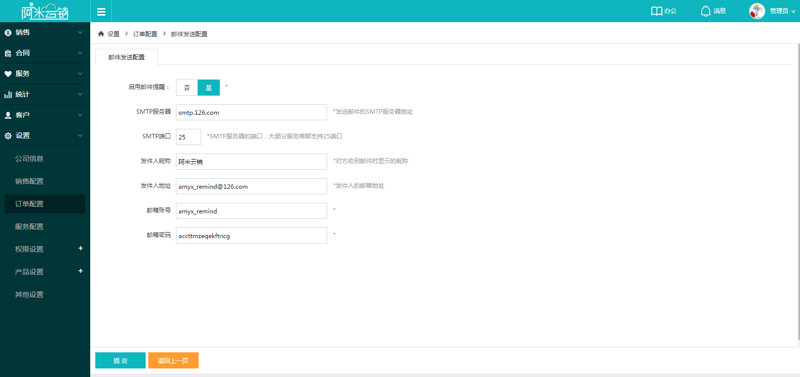

自定义合同订单过程中需要用到的信息，包括付款方式、计划模版配置、邮件模版配置、邮件发送设置和订单跟踪逾期原因设置。
1计划模版配置： 配置订单跟踪产品交付模版，可自定义步骤数量和名称，选择是否对客户可见以及是否发送邮件通知。
2邮件模板配置：自定义邮件标题和邮件内容，用于订单跟踪步骤完成后给客户发送邮件提醒，可自行调用下方数据作为引用，根据企业需要，完全自定义邮件内容。
3邮件发送设置：订单跟踪客户邮件提醒默认是以阿米云销的邮箱作为发送邮箱，如果企业想用自己的邮箱，可以在这里设置，填写正确的邮件发送信息，就可以以自己企业为发送邮箱给客户发送邮件提醒。
